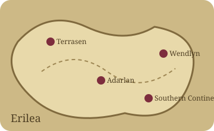
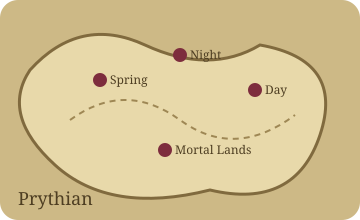
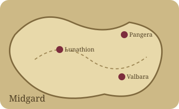

BOOK CLUB
OFFICIAL RELEASE COUNTDOWN
Return to Prythian
Your worlds are waiting.
Choose a shelf. Pull out a book. The Archive reveals only what you have safely unlocked.
YOUR READING SETUP
Books and chapters
Set or update your current place without clicking through chapters one by one.
Mentions
Cloud syncing for Book Club posts and mentions is the next database step.
ALWAYS OPEN
The Atlas
Maps are visible from the beginning. Story markers remain spoiler-safe.
DISCOVER SAFELY
The Archive
Lore and connections unlock the moment all required chapters are complete.
What you’ll remember
The Archive
Every entry checks your exact chapter progress.
The Atlas
Geography is always open. Story events and routes will unlock separately.

Erilea

Prythian

Midgard
Choose a map to see its currently safe locations.